9.1.14.1 ...的安装 SMG 
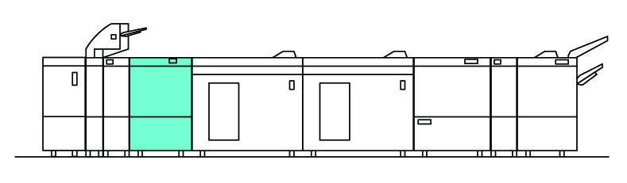
(图 1) ism910001
产品代码
SMG : QD200158
电源线（3脚）: EM100188 (FB), (FBAP (请参阅 6.2.1.1))
LD200267 (FB 设置 代码)
QD200158 : SMG
ED201519 : 检查 PC1
ED201416 : Smart 打印 Inspector 1.0
EM100188: 电源线（3脚）
安装步骤
关闭IOT主机和打印服务器, 拔掉电源.

用于 如何 to 关闭电源, 请参阅 the 维修 手册 用于 IOT 和 打印服务器.
检查随附物品.
SMG 随附物品 (图 2)
对接 板
Gasket 板 (2)
Stopper 支架
旋钮 螺钉
NVM 列表
螺钉 (M4x6 : 2)
螺钉 (M3x6 : 2)
* 那里 是 编号 illustrations 用于 Items 5 to 7.
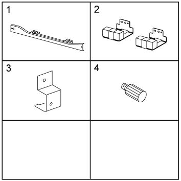
(图 2) ism910002
拆卸 packaging tape 和 packaging material 和 visually 检查 overall appearance.
打开前盖板, 拆卸 packaging tape 和 packaging material 和 visually 检查 overall appearance.
安装 对接 板 到 SMG 组件. (图 3)
安装 对接 板.
拧紧螺钉 (M4x6: x2).
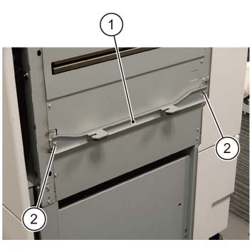
(图 3) ism910003
安装 Gasket 板 (x2) 到 SMG 组件. (图 4)
对齐 Gasket 板 (x2) 到 位置 marked D.
固定 the Gasket 板 (x2) by using 螺钉 (M3x6).
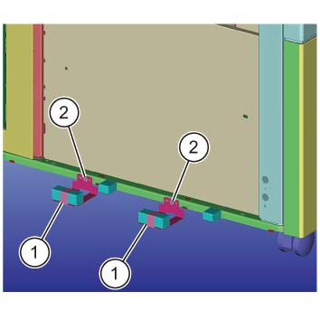
(图 4) ism910005
Temporarily 拆卸螺钉 哪个 secures the 对接 释放 杠杆 的 SMG 组件. (图 5)
拆卸螺钉 (x1).
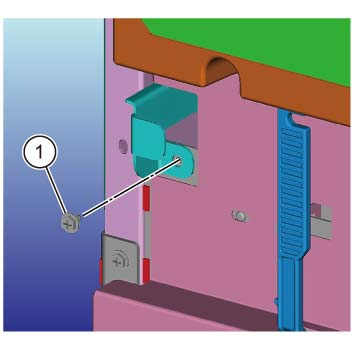
(图 5) ism910007
Dock the SMG 组件 到 上游 模块. (图 6)
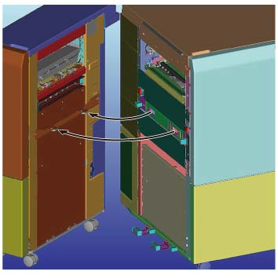
(图 6) ism910008
检查 SMG 组件 高度, 和 the gap 和 alignment 的 上游 模块 和 SMG 组件. (图 7)
确保 the 上方/下方 gaps 是 the 相同.
The 高度 difference 之间 the 上游 模块 和 SMG 组件 前面/后面 应 +/-2mm 和 电平.
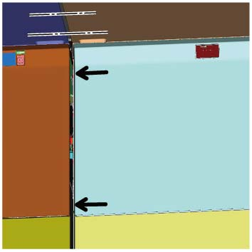
(图 7) ism910009
执行 最大到 步骤 14 to 调整 SMG 组件 高度, 和 the gap 和 alignment 的 上游 模块 和 SMG 组件.
拆卸 Wrench 的 CDM or 装订器 D6.
当...时 using the Wrench, take 注意 of burrs at 框架.
打开前盖板. (图 8)
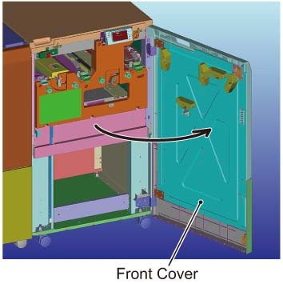
(图 8) ism910010
调整 by rotating the Caster (x2) 在前面. (图 9)
旋转 the Caster (x2) to 调整.
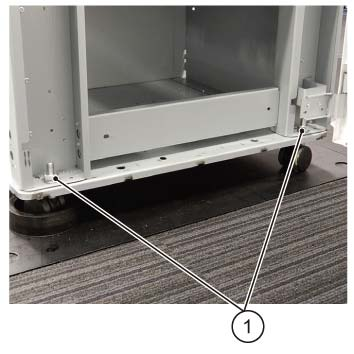
(图 9) ism910011
拆卸 Wrench 盖板 (x2) 在后面. (图 10)
拆卸 Wrench 盖板 (x2).
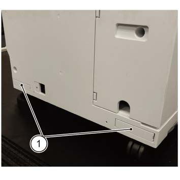
(图 10) ism910012
调整 by rotating the Caster (x2) 在后面. (图 11)
旋转 the Caster (x2) to 调整.
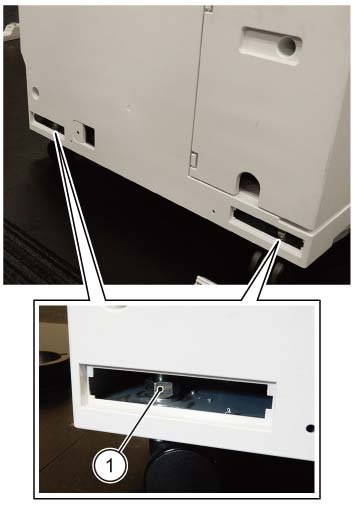
(图 11) ism910013
固定 the 对接 释放 杠杆. (图 12)
固定 it by using 螺钉.
(图 12) ism910007
固定 the SMG 使用 Foot (x2). (前面 2 位置图) (图 13)
Using a CDM or 装订器 D6 Wrench, 放下 Foot (x2) to a 半/一半 转动 在...之后 the Foot (2) is placed 在...上 接地.
拧紧 the 上方 和 下方 securing 螺母 的 Foot (x2) using the Wrench.
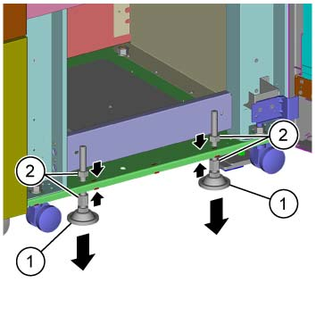
(图 13) ism910017
连接电源线 到 SMG 组件. (图 14)
连接电源线.
安装 Stopper 支架.
固定 it by using the 旋钮 螺钉.
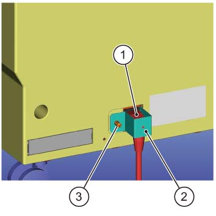
(图 14) ism910014
连接 电缆 的 SMG 组件 到 CDM 组件. (图 15)
连接 电缆.
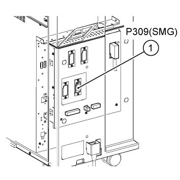
(图 15) ism910016
Receive the SFP+ 模块 该 已 purchased by the customer 和 安装 到 socket 在...上 ILSDP PWB. 连接 SMG 到 检查 PC using the CAT7 电缆 bundled 使用 检查 PC.
The setup 的 打印服务器 和 the 检查 PC 必须 已完成.
插头 每个 电源 插头 进入 电源 出口 和 打开 IOT 主 电源 开关.
打开电源 开关.
执行 Steps 23 to 33 to 确认 操作.
在...之后 ...的安装 IOT主机, temporarily 安装 CDM or later (so 该 the 对接 板 调整 可以 已执行 later by undocking the 对接 板).
如果 固件 versions of CDM Enh, SMG 和 其他 options 不是 已显示 in DownLoadTool 安装后 the SMG, the 固件版本 of CDM Enh 可能 不 be compatible 和/与 SMG (V20 or earlier).
断开 SMG 一次, 更新 the CDM Enh 固件 到 latest 版本 (V21 or later), 和 然后 连接 SMG 再次 和 更新 the 固件 的 SMG 和 其他 options 到 latest 版本.
执行 以下 在...上 检查 PC 在哪里 所有 软件 安装 已 已完成. 然后 reboot 系统.
D:\opt\INSYS\utility\CEtool\RawCapture\raw_capture_enable.bat
Load several 纸张 of A3 尺寸 纸张 进入 IOT 内部 纸盘 1.
FB: J 纸张
FBAP: 可选的
Import [D:\PrtSrvPublic\UtilityFiles\SMG\SideRegi.pdf.zip] 在...上 打印服务器 和 然后 打印 (1 纸张 输出). The 送纸 纸盘 必须 指定的 as the 内部 纸盘 1.
Delete the imported job 在...之后 the 操作. One-侧面 打印 和 侧面 2 输出 必须 指定的.
执行 以下 在...上 检查 PC.
D:\opt\INSYS\utility\CEtool\RawCapture\raw_显示.exe
检查 纸张 引线/导向 歪斜 (difference 之间 (a) 和 (b)) in the image 已显示 在...上 screen. (图 16)
确认 那里 is a .raw 文件 (captured image of SideRegi.pdf) in 折叠器 D:\opt\INSYS\ver3072\isyperm\isytmp_复印\0\检查\xxxxxxxxxxx-xxxxxxxxxx\comp\0000000001\. 选择 "xxxxxxxxxxx-xxxxxxxxxx" 折叠器 使用 latest 更新 日期 和 时间.
Drop the image 在...上 工具 screen.
检查 difference 之间 (a) 和 (b).
如果 difference 之间 (a) 和 (b) is 少于 2 mm: 编号 纸张 引线/导向 歪斜. Proceed to 步骤 30.
如果 difference 之间 (a) 和 (b) is 大于 2 mm: 执行 步骤 29 to 检查 引线/导向 歪斜.
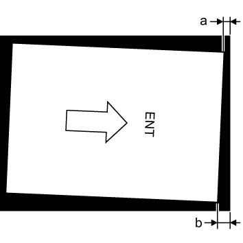
(图 16) ism910020
关闭电源 of 系统. 检查 parallelity of 每个 对接 之间 IOT 和 SMG, make them parallel 和 make the difference 之间 (a) 和 (b) 少于 2mm.
在...之后 the 操作, reboot 系统 和 执行 Steps 26 和 28 to 检查 difference 之间 (a) 和 (b), 和 然后 repeat the 操作 直到 the difference 之间 (a) 和 (b) is 少于 2 mm.
那里 is 编号 需要 import in 步骤 26.
检查 侧面 歪斜 (difference 之间 (c) 和 (d)) of 纸张 in the image 已显示 在...上 screen. (图 17)
如果 difference 之间 (c) 和 (d) is 少于 3 mm: 编号 纸张 侧面 歪斜. Proceed to 步骤 34.
如果 difference 之间 (c) 和 (d) is 大于 3 mm: 执行 Steps 31 to 33 to 检查 侧面 歪斜.
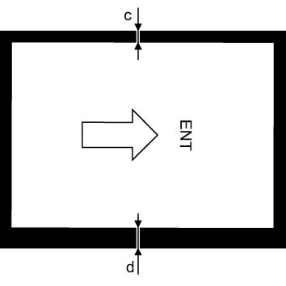
(图 17) ism910021
关闭电源 of 系统. 调整 对接 板 的 CDM 和/or SMG to 正确的 the difference 之间 (c) 和 (d) checked in 步骤 30. (图 18)
The line marking is in 1.5 mm increments
If (c) is 大: (纸张 is closer 到 前面), 移位 the 对接 hole 到 后面 (机器 is closer 到 前面).
If (d) is 大: (纸张 is closer 到 后面), 移位 the 对接 hole 到 前面 (机器 is closer 到 后面).
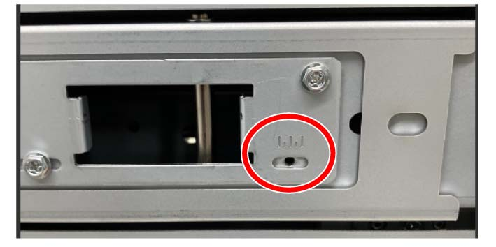
(图 18) ism910022
在...之后 调整, reboot 系统 和 执行 步骤 26 to 检查 纸张 侧面 歪斜 (difference 之间 (c) 和 (d)) in the image 已显示 在...上 screen 再次.
那里 is 编号 需要 import in 步骤 26.
确认 那里 is a .raw 文件 (captured image of SideRegi.pdf) in 折叠器 D:\opt\INSYS\var3072\isyperm\isytmp_复印\0\检查\xxxxxxxxxxx-xxxxxxxxx\comp\0000000001\. 选择 "xxxxxxxxxxx-xxxxxxxxxx" 折叠器 使用 latest 更新 日期 和 时间.
Drop the image 在...上 工具 screen.
检查 difference 之间 (c) 和 (d).
Repeat Steps 31 和 32 直到 the 侧面 歪斜 (difference 之间 (c) 和 (d)) is 少于 3 mm.
执行 以下 在...上 检查 PC. 然后 reboot 系统.
D:\opt\INSYS\utility\CEtool\RawCapture\raw_capture_disable.bat
Delete 以下 折叠器.
Delete the isytmp_复印 折叠器 在...下 the D:\opt\INSYS\var3072 折叠器.
也, delete the jobs imported in 步骤 26.
Explain 到 customer 如何使用.